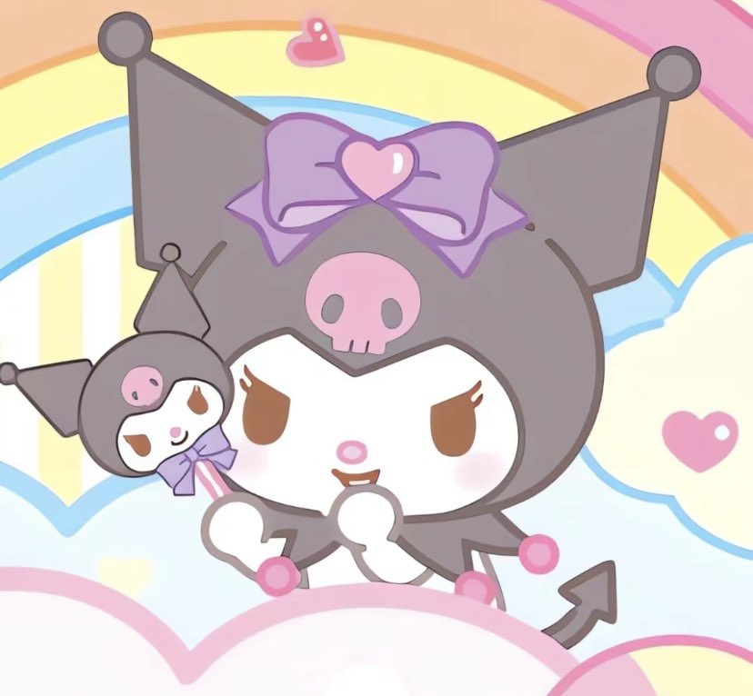

AMANDA NUR RAHMA ARIEF
Kuromi (クロミ, Kuromi) is a character from the My Melody universe. She is My Melody's rival and doppelgänger, and manifests as a white rabbit or imp-like creature wearing a black jester's hat with a pink skull on the front and a black devil's tail. The skull's facial expression on her forehead changes to match Kuromi's mood. Fittingly, her birthday is on Halloween (October 31st). Her name translates from Japanese to English as "black beauty"
Her mother and father wears a very similar outfit as herself. Kuromi makes her first appearance in 2005 as an antagonist of Onegai My Melody and is intended to be a mischievous, dark counterpart to My Melody, though in later current series such as Hello Kitty and Friends Supercute Adventures, her role is now changed into a more friendly demeanor with Hello Kitty and her friends, including My Melody herself
Like most other Sanrio characters, Kuromi's appearance is inspired by those of cartoon/anime characters from the early 20th century, as well as the 1990s, specifically Impmon from the Digimon series or Pichu from Nintendo's Pokemon franchise. On her debut, Kuromi took the punk, scene, and goth communities by storm and quickly became highly successful due to her unique, contrasting yet similar appearance and "naughty" personality compared to My Melody (which explains her trademark "angry" eyes), and due to this immense popularity, she since become a major character for Sanrio. True to her rivalry, Kuromi even sometimes surpasses My Melody herself in official Sanrio rankings and official media often has her directly competing against her counterpart.